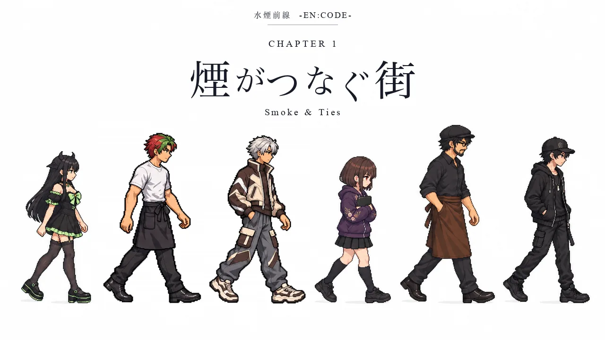
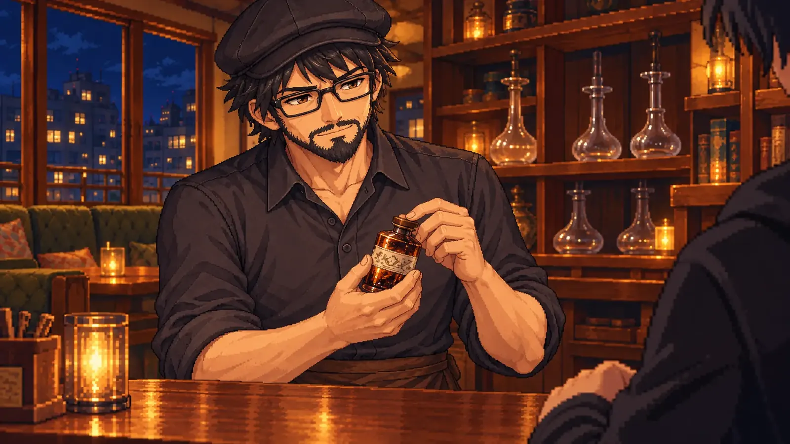

Chapter 1SMOKE CROWN CUP 編
常連の鉄仮面さんは、今夜も表情ひとつ変えずに帰っていった。師匠のスミさんに聞いても、返ってくるのは「客が満足したなら、それでいい」だけ。
街には、理屈で甘さを組み立てるなるがいる。ダブルアップルしか勧めないアダムがいる。接客ひとつで場をさらうみんとがいる。はじめは店を回り、教わり、真似をして、ときどき失敗する。
借りものだらけの手つきのまま、地元大会「SMOKE CROWN CUP」の舞台へ。入場の前、スミさんから短いメッセージが届く。
目の前の一人に届けてこい。
